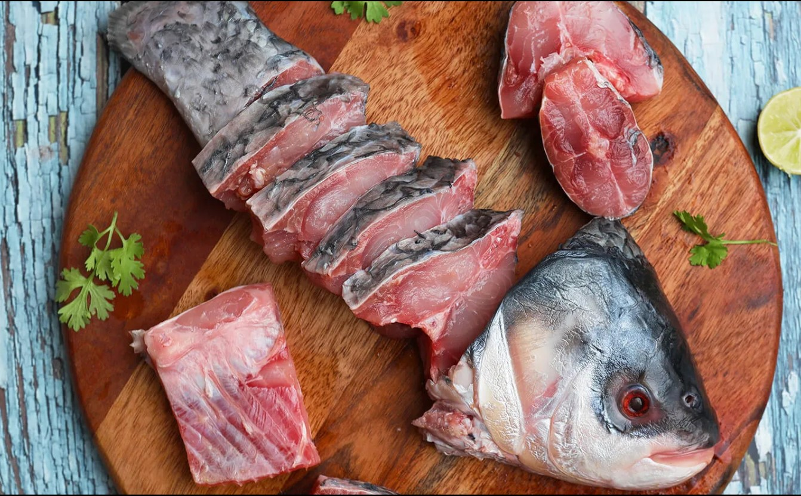
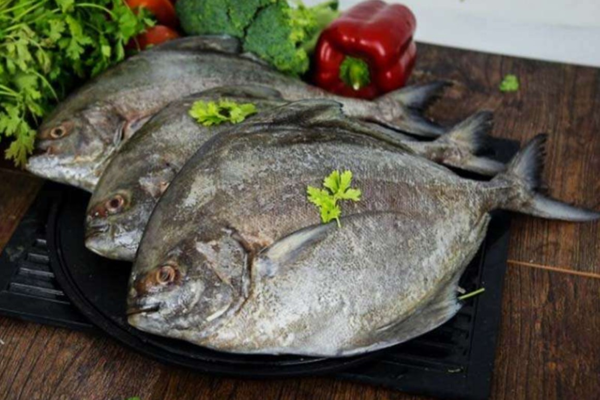
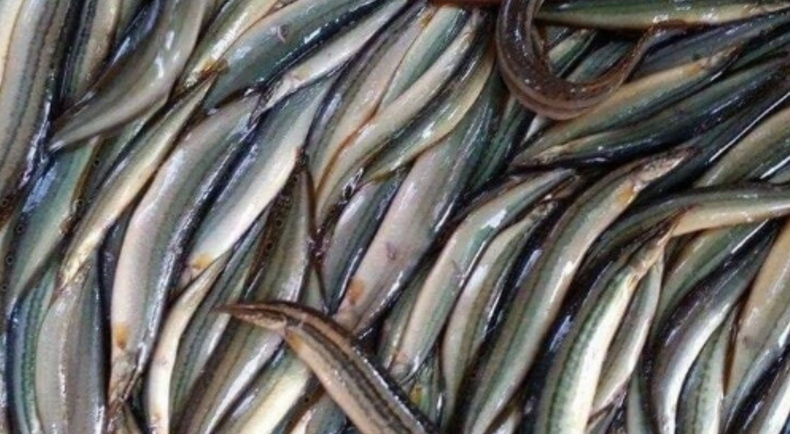

Apollo Fish
Apollo Fish Fillet is a ready-to-cook option favoured for
its tender texture and rich taste, ideal for a variety of
dishes. This fillet is especially popular in spicy,
flavourful recipes, making it perfect for frying, grilling,
or baking. Known for its versatility, Apollo fish fillet can
be easily seasoned, marinated, or coated in batter to suit
different culinary styles. Enjoy the convenience of a fillet
that requires minimal preparation and pairs well with a
range of spices and sauces.
Price
: Rs.350/-
Net
: 1 KG with frozen condition 50:50
Product
: India
Basa Fish
Fresh Basa is crafted fresh out of the Indian coastal
waters, No chemicals, no preservatives or antibiotics,
conserved right to maintain the finest quality and taste.
Having a diet plan to follow or just for the love of
consuming fish daily, richness and nutrients delivered to
your platter with our fine textured basa fish fillet. From
sourcing to delivery we ensure that everything is done in
the best temperature, thus ensuring quality and freshness at
every step. Bred in the exclusive farms and passed through
stringent quality checks, our team of experts ensure that
you give your tastebuds a superlative fishy experience.
Easy
to cook and hassle-free, you can toss it in your
favourite sauces, marinate with all the fascinating herbs
and spices and just fry roast or bake - do what your tummy
asks for and have a tasteful meal with our basa fish
fillet.
Price
: Rs.350/-
Net
: 1 KG with frozen condition 50:50 ratio
Product
: India
Rohu Fish
Fresh Rohu Fish enriched with a handsome amount of protein.
Packed with Omega 3 fatty acids and vitamins A, B, and C.
You should eat Rohu at least once a week. Rohu is a river
fish. It is considered to be a rich source of vitamin C,
which is essential for maintaining good health. It keeps
diseases like cold and cough at bay and prevents other
diseases related to it.
Price
: Rs.400/-
Net
: 1 KG without Ice
Minimum Order
: 5 KG
Catla

No Antibiotic No Preservative It is one of the popular
freshwater fish. The taste of Catla is just superb, the most
famous in south. And its meat is full of nutrients like
amino acids, minerals, vitamins, and the right amount of
sulfur which helps the assimilation of nutrients. It is most
famous in north India and Bengal. We use
the best quality packaging material to ensure that your fish
is fresh, soft, and ready to use even after a couple of
weeks.
Price
: Rs.400/-
Net
: 1 KG without Ice
Minimum Order
: 5 KG
Mackerel Fish
Fresho Mackerel Fish is an oily fish, it is a rich source of
omega-3 fatty acids A mackerel is a sea fish with a dark,
patterned back The extra fat enhances the flavour of the
fish and ensures that it's packed with protein, vitamin D
and lots of healthy omega.
Price
: Rs.500/-
Net
: 1 KG with frozen condition 50:50
Roopchand Fish
Roopchand Fish - Steaks are thick, meaty slices of this
freshwater fish, prized for its mild flavour and tender
texture. These steaks are perfect for grilling, baking, or
pan-searing, allowing for a variety of cooking methods that
enhance the fish’s natural taste. Roopchand's firm flesh
holds up well during cooking, making it ideal for rich
marinades and spices. Whether prepared in traditional
recipes or contemporary dishes, Roopchand Fish Steaks offer
a satisfying seafood experience, making them a popular
choice among seafood enthusiasts.
Price
: Rs.400/-
Net
: 1 KG
Minimum Order
: 5 KG
White Pamfret
White Pomfret is a butterfish which is known for its amazing
taste. It is considered a delicacy and can be cooked in
diverse ways. Not only taste but also it is known for its
beneficial value. These fish are great for the heart,
protect joints and improve eyesight. This whole cleaned
white pomfret fish comes with the head. It is clean and
gutted. This comes in 5 to 8 pcs which is perfect for 3-5
people. It is preservative-free. Fresho is our in-house
brand of fresh meat, poultry, and seafood.
We take the
utmost care in selecting the best suppliers to provide you
with high-quality
succulent products. Every product is stored in our cold
storage right until your doorstep ensuring freshness and
utmost hygiene. The product was weighed before cleaning and
cutting. Net weight will be lower at the time of delivery
because of cleaning and processing weight loss.
Price
: Rs.1500/-
Net
: 1 KG without Ice
Black Pomfret

Fresho Black Pomfret Fish is a delicious fish that provides
light coloured flesh with a very pleasant flavour. There is
a dark strip under the skin, but it is not noticeably
stronger in flavour than the light flesh. The flesh holds
together very well for all forms of wet cooking and pan
frying but flakes easily on the plate. It is a particularly
decent shape for cooking whole. It is a major source of
calcium, vitamins A and D, and vitamin B12, vital for the
nervous system.
Price
: Rs.1500/-
Net
: 1 KG without Ice
Koramenu Fish

Koramenu or Murrel fish is one of the popular fresh water
and tasty fish in India. It’s an excellent source of omega-3
fatty acids, protein. Regular consumption of Koramenu may
prevent heart diseases and improve skin and hair glow. And
its also useful for brain development, eye site improvement
and control diabetes.
Price
: Rs.675/-
Net
: 1 KG with ice 50:50 ratio
Bommidayalu

The fish has a generous amount of spices mixed with
aromatics inside it. and these spices make for a brilliant
burst of flavors inside your mouth fish is believed to be
the source behind omega 3 fatty acids inside your body.
These fatty acids make for a good flow of blood, and reduce
chances of inflammation and heart diseases.
Price
: Rs.700/-
Net
: 1 KG with ice 50:50 ratio